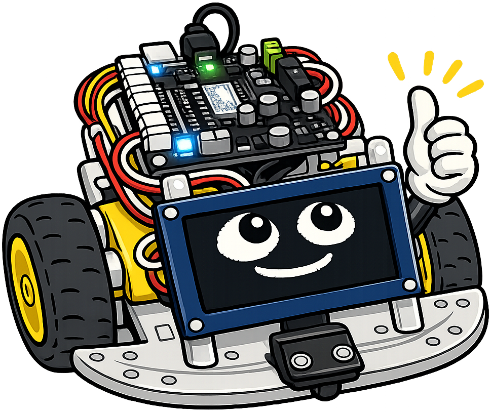

Hardware Platform and Robot Assembly
Welcome back, maker!
 This chapter is where the robot stops being an idea and starts being something you can hold. We will learn the names of every part, understand how the brain of the robot works, and wire everything together — without touching a soldering iron. Let's make it real!
This chapter is where the robot stops being an idea and starts being something you can hold. We will learn the names of every part, understand how the brain of the robot works, and wire everything together — without touching a soldering iron. Let's make it real!
Summary
This chapter introduces the physical computing platform that drives the entire course. Students explore the Raspberry Pi Pico family, the RP2040 microcontroller chip, and the Cytron Maker Pi RP2040 board with its GPIO pins and connectors. The chapter culminates in a no-soldering assembly of the Smart Car chassis, accompanied by hardware troubleshooting skills and safety practices that students will rely on throughout the course.
Concepts Covered
This chapter covers the following 20 concepts from the learning graph:
- Resistors
- Breadboard Layout
- Microcontroller Overview
- Raspberry Pi Pico
- RP2040 Chip
- Raspberry Pi Pico W
- Cytron Maker Pi RP2040
- GPIO Pin Basics
- GPIO Pin Numbering
- Digital Input Pin
- Digital Output Pin
- Flash Memory
- Pinout Diagram
- Grove Connectors
- Dupont Connectors
- Castellated Edge PCB
- Mechanical Design Basics
- No-Soldering Assembly
- Hardware Troubleshooting
- Safety Practices
Prerequisites
This chapter builds on concepts from:
What Is a Microcontroller?
Every robot needs a brain. That brain is a microcontroller — a tiny computer built onto a single chip. A microcontroller has no keyboard and no screen. It runs one program at a time and is designed to control hardware directly. It turns motors on, reads sensors, and blinks LEDs, all from a board smaller than a credit card.
The specific chip powering your robot is the RP2040, made by the Raspberry Pi Foundation. The RP2040 is a dual-core processor, meaning it contains two independent processors on one chip. It runs at up to 133 MHz and includes 264 KB of fast working memory called RAM. The chip is about the size of a large postage stamp, but it has all the computing power this course needs.
Hmm, think about this for a second, maker.
 A laptop has billions of transistors and costs hundreds of dollars. The RP2040 has only about 30 million transistors — but it still runs MicroPython code fast enough to drive two motors and read a distance sensor at the same time. In robotics, right-sized beats biggest every time.
A laptop has billions of transistors and costs hundreds of dollars. The RP2040 has only about 30 million transistors — but it still runs MicroPython code fast enough to drive two motors and read a distance sensor at the same time. In robotics, right-sized beats biggest every time.
The Raspberry Pi Pico Family
The RP2040 chip alone is too tiny to work with easily. It ships pre-soldered onto a development board called the Raspberry Pi Pico. The Pico adds a USB connector for programming, voltage regulators to manage power, and 40 header pins for connecting sensors and motors. It is about the size of a stick of gum and costs around $4.
There is also a version called the Raspberry Pi Pico W. The "W" stands for wireless. The Pico W adds a small Wi-Fi and Bluetooth radio module right next to the RP2040 chip. It looks almost identical to the standard Pico. The Pico W unlocks wireless features that appear in the advanced chapters of this course.
Before we go further, let's compare the two boards side by side:
| Feature | Raspberry Pi Pico | Raspberry Pi Pico W |
|---|---|---|
| Processor | RP2040 (dual-core, 133 MHz) | RP2040 (dual-core, 133 MHz) |
| Flash storage | 2 MB | 2 MB |
| Wi-Fi | No | Yes (2.4 GHz) |
| Bluetooth | No | Yes (BLE 5.2) |
| Price | ~$4 | ~$6 |
| Use in this course | Early labs | Wi-Fi and BLE labs |
Both boards use the same RP2040 chip. The only difference is the wireless module. All MicroPython programs written for the Pico run unchanged on the Pico W.
The Cytron Maker Pi RP2040 — Your Robot's Brain
A bare Raspberry Pi Pico is great for experimenting on its own. But building a robot with one requires extra circuits: motor driver chips, connector blocks, LED indicators, and a buzzer. The Cytron Maker Pi RP2040 board bundles all of those extras into one package. It is the board your robot actually uses.
Here is what the Cytron board adds on top of a plain Pico:
- Two DC motor driver channels, each handling up to 1 A of current
- Seven Grove connector ports for sensors and peripherals
- 13 onboard LEDs showing the state of each GPIO pin in real time
- A piezo buzzer for sound output
- A reset button and a boot button for programming
- Screw terminal blocks for connecting motors and power
The Cytron board snaps onto the Smart Car chassis without modification. All of the pin numbers from the plain Pico are preserved, so the MicroPython code you write works on both boards. Now let's explore the board's layout using an interactive diagram.
Diagram: Cytron Maker Pi RP2040 Board Explorer
Cytron Maker Pi RP2040 Board Explorer
Type: infographic
sim-id: cytron-board-explorer
Library: p5.js
Status: Specified
Bloom Level: Remember (L1) — Identify the main components on the Cytron Maker Pi RP2040 board. Bloom Verb: Identify
Learning Objective: Students will identify each major component on the Cytron Maker Pi RP2040 board and state its function in the robot system.
Layout: - Left 65% of canvas: Stylized top-view illustration of the Cytron Maker Pi RP2040 board showing component placement with labels - Right 35% of canvas: Info panel that updates when the user clicks any labeled component
Components shown on the board illustration (each is a labeled, clickable region): 1. RP2040 chip — large square IC in the center 2. Raspberry Pi Pico module outline — dashed border showing the Pico footprint 3. USB Micro-B connector — left edge 4. Motor driver terminals (M1, M2) — blue screw terminals at the bottom 5. Grove connectors (GP0, GP1, GP2, GP4, GP16, GP17, GP26) — white 4-pin connectors along the edges 6. Onboard LEDs (13 total) — small circles adjacent to GPIO pin labels 7. Piezo buzzer — small circular component with label 8. Reset button — labeled square button 9. Boot button — labeled square button 10. Power terminal — large green screw terminal block
Info panel content displayed on click: 1. RP2040 Chip: "The brain. Dual-core ARM processor at up to 133 MHz. Executes your MicroPython code." 2. Pico module: "The Raspberry Pi Pico mounts here. Its 40 pins align with sockets on this board." 3. USB connector: "Plug your USB cable here to upload programs or to power the board from a laptop." 4. Motor drivers M1, M2: "Each channel drives one DC motor up to 1 A and can reverse direction. M1 = left motor, M2 = right motor." 5. Grove connectors: "Keyed 4-pin connectors for sensors. They only plug in one way — you cannot wire them backwards." 6. Onboard LEDs: "Each LED lights up when its GPIO pin goes HIGH. No extra wiring needed to see pin state." 7. Piezo buzzer: "Generates tones. Your code uses PWM to play notes or beep patterns." 8. Reset button: "Restarts the board without unplugging USB. Press once to reboot." 9. Boot button: "Hold this while plugging in USB to enter bootloader mode for firmware updates." 10. Power terminal: "Connect the AA battery pack here. Provides motor power independently of USB."
Visual style: - Board drawn as a flat top-view illustration in the Cytron blue-green color palette - Clickable regions glow orange on hover - Active (clicked) region outlined in orange with info panel updating immediately - Info panel: white text on dark navy background - Transitions smooth when switching between components
Responsive behavior: Canvas redraws on window resize. Board illustration scales proportionally. Info panel always occupies the right column.
Instructional Rationale: Clicking labeled component regions at the Remember level builds part-name fluency before students handle physical hardware. Hover highlights prevent "where is it?" confusion during assembly.
GPIO Pins: Your Robot Talks to the World
The most important feature of any microcontroller is its ability to communicate with the outside world. It does this through GPIO pins — short for General Purpose Input/Output pins. Each GPIO pin is a small metal contact on the board that your MicroPython code can control directly. You set a pin to either send a signal out, or listen for a signal coming in.
Before going further, let's define two key ideas. A digital signal has exactly two levels: HIGH or LOW. HIGH means the pin is at 3.3 volts (V), which MicroPython reads as True or 1. LOW means the pin is at 0 V, which reads as False or 0. These two states map directly to the binary logic inside the RP2040.
A pin set as a digital output pin sends a HIGH or LOW signal outward — for example, switching an LED on or off, or telling a motor driver to run. A pin set as a digital input pin listens for a HIGH or LOW signal coming in — for example, reading a button press or a sensor output. You decide in MicroPython code whether each pin acts as an input or an output.
The RP2040 has 30 GPIO pins, numbered GP0 through GP29. Not all of them appear on the Cytron board — some are used internally. The pins that are available are printed on the board's pinout diagram, a reference drawing showing every pin's number, location, and special functions. Reading the pinout diagram is a skill you will use every week in this course.
Here's a move that saves engineers a lot of time.
 Bookmark the Cytron Maker Pi RP2040 pinout diagram on your browser right now. You will look at it dozens of times this semester. Knowing which pin number maps to which physical hole on the board prevents wiring mistakes that can take 30 minutes to find.
Bookmark the Cytron Maker Pi RP2040 pinout diagram on your browser right now. You will look at it dozens of times this semester. Knowing which pin number maps to which physical hole on the board prevents wiring mistakes that can take 30 minutes to find.
Diagram: GPIO Pin Explorer
GPIO Pin Explorer MicroSim
Type: microsim
sim-id: gpio-pin-explorer
Library: p5.js
Status: Specified
Bloom Level: Understand (L2) — Explain how GPIO pins switch between input and output modes and how HIGH/LOW states map to voltage. Bloom Verb: Explain
Learning Objective: Students will explain the difference between a digital input pin and a digital output pin, and correctly map HIGH/LOW states to voltage levels and MicroPython boolean values.
Canvas layout: - Left 55%: Visual schematic showing a simplified view of two GPIO pins — one connected to an LED with a resistor (output mode), one connected to a push button (input mode) - Right 45%: Control panel with mode selector and data display
Visual elements: - Schematic shows: an "RP2040" microcontroller block, a wire from GP15 to an LED and resistor, a wire from GP14 to a push button - LED glows yellow when HIGH; is gray when LOW - Button shows "pressed" vs "released" state visually (depressed outline vs raised) - Voltage bar on each wire: 0.0 V to 3.3 V scale with animated fill - Current mode label above each pin: "OUTPUT" or "INPUT"
Interactive controls (right panel): - Dropdown: "Select Pin Mode" — Output or Input - Toggle button: "Set HIGH / Set LOW" (active in Output mode) - Toggle button: "Press Button / Release Button" (active in Input mode) - Data display: Pin Mode, Voltage reading, MicroPython value (True / False)
Data Visibility Requirements: Stage 1: Output mode, LOW — LED off, 0.0 V, value = False Stage 2: Click "Set HIGH" — LED lights yellow, 3.3 V, value = True Stage 3: Switch dropdown to Input — controls change to button toggle Stage 4: Click "Press Button" — 3.3 V, value = True (pull-up keeps line high when pressed) Stage 5: Click "Release Button" — 0.0 V, value = False
Default parameters: - Mode: Output - State: LOW (LED off)
Responsive behavior: Canvas redraws on window resize. Schematic and control panel maintain proportional widths. Voltage bars redraw correctly at all sizes.
Instructional Rationale: Step-through with concrete voltage values is appropriate for an Understand/Explain objective. Students need to see the exact voltage change when they toggle HIGH/LOW before they can explain the relationship between code and electricity. Continuous animation would obscure the binary nature of the two states.
Storing Your Programs: Flash Memory
When you upload a MicroPython program to your board, it has to live somewhere. That somewhere is flash memory — a type of permanent storage built into the Pico module. The Cytron board's Pico module includes 2 MB of flash memory. That is enough to hold dozens of MicroPython programs and all the libraries you need.
Flash memory keeps your programs even when power is off. The moment you power the board back on, it reads the stored program and starts running it. This is different from RAM (Random Access Memory), which holds data only while the board is running. Flash is for long-term storage; RAM is for fast, temporary use while the program executes.
You do not need to manage flash memory yourself. The IDE (development tool) you use handles it automatically when you save files to the board. Just know that the 2 MB limit means you should keep program files small and text-based — large audio files or images would fill the storage too quickly.
Connectors: Wiring Without Soldering
One reason this course requires no soldering is the Cytron board's selection of connectors. A connector is a standardized physical interface that lets you attach and detach wires safely and repeatedly. Three connector types appear on your board, and knowing all three prevents wiring mistakes.
Grove connectors are white 4-pin connectors with a distinctive keyed shape. They only plug in one direction, making wiring mistakes impossible. Each Grove connector carries two signal wires, one 3.3 V power wire, and one ground wire. Most sensors in this course use Grove cables — just plug in and go.
Dupont connectors are plain individual 2.54 mm jumper wires you will use when a sensor does not have a Grove port. They are less foolproof than Grove connectors because they can be plugged in backwards. Always check the pin labels before connecting a Dupont cable. The pinout diagram shows which position is signal, power, and ground.
Castellated edges are the small half-circle holes along the edge of the Raspberry Pi Pico module. The word "castellated" means the edge looks like the top of a castle wall, with alternating notches. These holes let the Pico be soldered directly onto another circuit board. In this course you will not solder, but understanding castellated edges explains why the Pico fits so snugly on the Cytron board.
Here is a summary of all three connector types:
| Connector Type | Pins | Direction-safe? | Common use in this course |
|---|---|---|---|
| Grove | 4 (2 signal, VCC, GND) | Yes — keyed shape prevents reversal | Most sensors and peripherals |
| Dupont | Varies (1 pin per wire) | No — check polarity before plugging in | Sensors without Grove ports |
| Castellated Edge | 40 (all GPIO signals) | Yes — aligns mechanically to board | How the Pico mounts to the Cytron board |
Resistors and Breadboards
Two more fundamental electronics tools appear in early labs: resistors and breadboards. Let's define each one before you encounter them on the workbench.
A resistor is a tiny electronic component that limits how much electric current can flow through a wire. It looks like a small cylinder with colored stripes and two metal leads. In robotics labs, resistors do three main jobs. They protect LEDs from burning out by limiting current. They create stable HIGH or LOW voltages on input pins when nothing is connected. And they set signal levels for some sensors. The colored stripes encode the resistor's value in ohms (Ω) — the unit of electrical resistance.
A breadboard is a rectangular plastic board covered in tiny spring-loaded holes. It lets you build temporary circuits by pushing wires and components into the holes — no soldering required. Inside the breadboard, rows of holes are electrically connected to each other. Two long rails along the edges carry power (+) and ground (−). Horizontal rows of five holes in the middle all connect across each row. You use a breadboard to prototype circuits quickly, test different wiring ideas, and check components before committing to a permanent design.
Diagram: Breadboard Layout Explorer
Breadboard Layout Explorer
Type: infographic
sim-id: breadboard-layout-explorer
Library: p5.js
Status: Specified
Bloom Level: Understand (L2) — Explain how the internal connections of a breadboard allow components to share electrical pathways. Bloom Verb: Explain
Learning Objective: Students will explain which holes on a breadboard are electrically connected to each other, and correctly trace a circuit path from the power rail through a component to ground.
Layout: - Left 70%: Top-view illustration of a standard 830-hole breadboard (63 rows × 10 columns plus 2 power rails per side) - Right 30%: Info panel showing a plain-English description of the selected connection
Visual elements: - Breadboard drawn in realistic detail: cream body, red and blue power rail stripes, column letters (a–e, f–j), row numbers (1–63) - Center gap (DIP channel) shown as a dark groove labeled "IC channel — NOT connected across the gap" - Holes rendered as small dark circles with hover glow
Interactivity: - Hover any hole: cursor changes to pointer, hole glows orange - Click any hole in a row (columns a–e): entire row a–e on that side lights yellow; info panel: "All five holes in this row (a–e, row N) are connected. This connection does NOT cross the center gap." - Click any hole in a row (columns f–j): entire row f–j lights yellow; info panel shows same message for that side - Click the red (+) power rail: entire red rail glows; info panel: "Connected to 3.3 V power. All holes in this rail column share the same voltage." - Click the blue (−) power rail: entire blue rail glows; info panel: "Connected to GND (0 V). All holes in this rail column share ground." - "Reset highlights" button clears all glowing holes
Info panel for each selection shows a small diagram of the connection path as a colored line tracing through the selected holes.
Responsive behavior: Canvas scales with window width. Breadboard illustration maintains aspect ratio. Info panel stacks below the breadboard on narrow viewports.
Instructional Rationale: Clicking holes to highlight invisible internal connections makes breadboard topology concrete and visible. Students build an accurate mental model before handling physical hardware, preventing the most common beginner mistake — assuming holes across the center gap are connected.
Safety Practices
Before you touch any hardware, let's cover the safety rules. Electronics labs are safe when you follow simple habits every single time. Skipping these habits is the main way students damage boards — and a damaged board can mean weeks of waiting for a replacement.
The core safety rules for this course are:
- Power off before wiring. Disconnect the USB cable and battery pack before adding or changing any wires. Touching the wrong pin while the board is powered can destroy it instantly.
- Handle boards by the edges. The chips and solder joints on the bottom of the board are sensitive to static electricity from your fingers. Hold boards at the sides, not across the components.
- Never exceed 3.3 V on GPIO pins. The RP2040's GPIO pins are rated for 3.3 V maximum. Connecting a 5 V signal will damage them. Always check a sensor's voltage rating before wiring.
- Use a data USB cable. Some USB cables are charge-only and cannot transfer programs. If your computer cannot connect to the board, try a different cable before assuming the board is broken.
- Do not force connectors. Grove connectors fit in one orientation only. If a connector requires real force, stop and check the direction. Forcing the wrong orientation breaks pins.
Heads up — this one gets every maker at least once.
 The most common way students damage a Cytron board is changing a wire while USB is still plugged in. It always feels faster to "just quickly swap one wire." It is not faster when you have to wait for a replacement board. Power off first. Every time. No exceptions.
The most common way students damage a Cytron board is changing a wire while USB is still plugged in. It always feels faster to "just quickly swap one wire." It is not faster when you have to wait for a replacement board. Power off first. Every time. No exceptions.
Mechanical Design Basics
The robot's body is called the Smart Car chassis — a flat acrylic or aluminum base plate with mounting holes for motors, battery packs, and the Cytron board. The word chassis comes from automotive engineering and means the structural frame of a vehicle. The chassis is the skeleton that holds every other component in place.
The chassis uses standoffs — small metal or nylon pillars that create space between the Cytron board and the base plate. Standoffs keep the solder joints on the bottom of the board from touching the chassis surface, which would cause a short circuit. They also set the board at the right height so motor wires can reach the terminal blocks cleanly.
Two DC motors mount to the underside of the chassis using plastic brackets and small M3 screws. Each motor shaft presses into a rubber wheel. The wheels are the main actuators — the physical things your software eventually moves. Keeping the motor mounts tight and the wheels centered is the key to a robot that drives in a straight line.
No-Soldering Assembly
Now let's put it all together. The assembly process for the Smart Car has eight stages. Every connection uses a screw, a press-fit, or a plug. No heat is needed.
This part looks like a lot. You've got this, engineer.

Every maker I know felt a little nervous the first time they stared at a pile of robot parts. Take it one step at a time. The instructions show you exactly which hole each screw goes into. If something does not fit easily, check the orientation before applying any force — the right angle plus gentle pressure is almost always the answer.Here is the assembly sequence:
- Attach the motors. Press each DC motor into its plastic bracket. Fix the bracket to the underside of the chassis with M3 screws. Orient both motors so the shafts point outward toward the chassis edges.
- Install the standoffs. Thread four M3 nylon standoffs through the corner holes of the chassis from the top side. Tighten the nuts underneath. Use nylon, not metal — metal standoffs can short the board.
- Route the motor wires. Thread the red and black leads from each motor up through the chassis opening to the top surface. Keep them untangled now so they are easy to connect later.
- Mount the Cytron board. Lower the board onto the four standoffs. Align the corner mounting holes with the standoff tops. Press gently and secure with M3 screws. The board should sit flat with no rocking.
- Connect the motor terminals. Insert the left motor wires into the M1 screw terminal and the right motor wires into M2. Tighten each screw until the wire is firmly gripped. Tug gently to confirm. A loose wire causes erratic motor behavior.
- Attach the wheels. Press each yellow rubber wheel onto its motor shaft until it clicks. Spin each wheel by hand — it should spin freely and sit straight. A crooked wheel causes the robot to veer off course.
- Connect the battery pack. Plug the battery pack connector into the power terminal. Red wire goes to positive (+), black to negative (−). Reversed polarity can destroy the motor driver chips.
- Connect the sensor cable. Plug the time-of-flight sensor's Grove cable into the Grove port labeled GP16/GP17. Tuck any excess cable length under the board so it stays clear of the wheels.
Diagram: Robot Assembly Workflow
Robot Assembly Workflow
Type: workflow
sim-id: robot-assembly-workflow
Library: p5.js
Status: Specified
Bloom Level: Apply (L3) — Assemble the Smart Car chassis by following the correct sequence of steps and explain why each step comes before the next. Bloom Verb: Assemble
Learning Objective: Students will sequence the eight assembly steps in the correct order and explain the mechanical reason each step precedes the next (e.g., why standoffs must be installed before the board is mounted).
Layout: - Eight vertical steps arranged as a top-to-bottom flowchart - Each step is a rounded rectangle with a step number, short title, and a simple icon - Downward arrow connectors between steps - Right side: Expanded detail panel that appears when a step is clicked
Steps with icons and click-to-expand detail text:
Step 1 — Attach Motors Icon: Motor + gear Detail: "Mount each motor into its plastic bracket with two M3 screws. Both shafts point outward. Reason for first: motors are hardest to reach once the board is mounted above them."
Step 2 — Install Standoffs Icon: Four pillars Detail: "Thread four M3 nylon standoffs through the chassis corner holes; nuts below. Use nylon — metal standoffs can short the board. Reason: the board mounts onto these standoffs next."
Step 3 — Route Motor Wires Icon: Two-color wire Detail: "Thread red and black motor wires up through the chassis opening to the top surface. Reason: impossible to route wires cleanly after the board covers the opening."
Step 4 — Mount Cytron Board Icon: PCB outline Detail: "Lower the board onto the standoffs and secure with M3 screws. Board must sit flat with no rocking. Reason: the board must be in place before wires reach its terminals."
Step 5 — Connect Motor Terminals Icon: Screw terminal Detail: "Left motor wires go into M1, right into M2. Tighten each screw and tug to confirm grip. Reason: a loose wire causes erratic motor behavior that looks like a software bug."
Step 6 — Attach Wheels Icon: Yellow wheel Detail: "Press each wheel onto its shaft until it clicks. Spin by hand — must spin freely and sit perpendicular. Reason: a crooked wheel causes the robot to veer even when code is perfect."
Step 7 — Connect Battery Pack Icon: AA batteries Detail: "Red wire to + terminal, black to − terminal. Never reverse polarity. Reason: reversed polarity can permanently damage the motor driver chips."
Step 8 — Connect Sensor Cable Icon: Grove plug Detail: "Plug the time-of-flight sensor Grove cable into the GP16/GP17 port. Tuck excess cable. Reason: this sensor is used in every collision-avoidance lab starting in Chapter 8."
Visual style: - Steps use a blue-to-green gradient (step 1 = blue, step 8 = green) to represent assembly progress - Clicked step highlighted with orange border; all others remain their gradient color - Detail panel slides in smoothly from the right on click - Completed steps show a small green checkmark in the top-right corner after being clicked - Arrow connectors: gray with directional arrowheads
Responsive behavior: Flowchart scales with window width. On narrow viewports, detail panel stacks below the flowchart. Step rectangles maintain a minimum 80 px height.
Instructional Rationale: A clickable workflow at the Apply level gives students a scaffold to consult during physical assembly. Revealing "why this step is here" turns a rote procedure into deliberate reasoning about mechanical dependencies — the same decomposition thinking introduced in Chapter 1.
Hardware Troubleshooting
No matter how carefully you assemble the robot, something will not work on the first try. That is not a failure — it is a normal part of engineering. Hardware troubleshooting is the skill of figuring out why something does not work and fixing it step by step.
Before you decide a component is broken, work through this checklist:
- Is it powered? Check that USB is firmly connected. Look for the green power LED on the Cytron board. If it is not lit, the board has no power.
- Is the program uploaded? Confirm your file was saved to the board, not just to your laptop. Use your IDE's file browser to see what files are stored on the board.
- Are all wires seated? Gently tug each connector to confirm it is fully plugged in. A wire that looks connected but is not fully seated is one of the most common hardware bugs.
- Is anything reversed? Check your battery pack polarity. Red to positive, black to negative. Reversed polarity damages hardware instantly.
- Is the correct Grove port in use? Your code specifies GPIO pin numbers. Make sure the physical cable matches. GP16 and GP17 are the I2C data pins for the time-of-flight sensor — any other port will not work.
- Do the onboard LEDs tell you anything? The Cytron board has 13 LEDs that light up when their GPIO pin goes HIGH. If your code sets a pin HIGH and the LED stays dark, the program is not running as expected.
Hardware troubleshooting is the same debugging fundamentals you learned in Chapter 1 — form a hypothesis, test it, observe the result. Work through one hypothesis at a time. Changing two things at once makes it impossible to know which change fixed the problem.
What You Built
You now know the complete hardware platform that powers your robot for this entire course. You can name every component on the Cytron board, explain what GPIO pins do, read a pinout diagram, use Grove and Dupont connectors safely, and follow the no-soldering assembly sequence from a pile of parts to a rolling chassis. That is a solid foundation to build the rest of the course on.
Check your understanding — click to reveal the answers
Q1. What does GPIO stand for, and why does the direction (input vs. output) matter?
A1. GPIO stands for General Purpose Input/Output. The direction determines whether the pin sends a signal (output — like controlling an LED) or receives a signal (input — like reading a button). Setting the wrong direction in code means the pin cannot do its job.
Q2. What is the difference between a Grove connector and a Dupont connector? When would you use each?
A2. A Grove connector is keyed (has a notch that prevents backwards insertion) and carries 4 wires in a standard layout. A Dupont connector is a generic single-wire jumper that can be inserted backwards. Use Grove for sensors that have Grove ports; use Dupont when a sensor only has bare wire leads.
Q3. What is flash memory used for on the Cytron board, and why does it not lose data when you unplug the robot?
A3. Flash memory stores MicroPython programs permanently. It keeps data without power because it uses floating-gate transistors that hold charge even when electricity is removed — the same technology used in USB flash drives.
Double thumbs-up, engineer — you built a robot!
 You just assembled a real robot. Motors, wires, a microcontroller brain — and not a soldering iron in sight. The hardware is ready. In the next chapter we set up the software tools, upload your very first program, and watch Sparky's LEDs blink on command. Let's go!
You just assembled a real robot. Motors, wires, a microcontroller brain — and not a soldering iron in sight. The hardware is ready. In the next chapter we set up the software tools, upload your very first program, and watch Sparky's LEDs blink on command. Let's go!